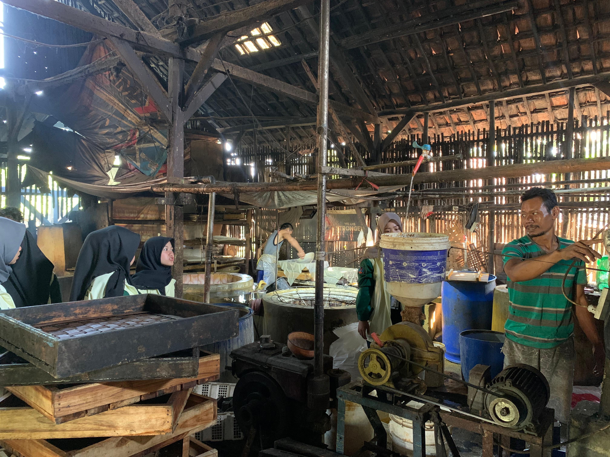

25 Juli 2025 | Administrator
Ekonomi Desa Pabuaran Kidul berkembang berdasarkan sektor pertanian, perdagangan, dan industri rumah tangga, yang menjadi tulang punggung pendapatan masyarakat. Sebagian besar warga bermata pencaharian sebagai petani, pedagang keliling, pengrajin, dan pengusaha mikro. Komoditas utama pertanian desa antara lain padi, jagung manis, bawang merah, tebu, dan aneka sayuran. Produk-produk ini memiliki nilai jual yang cukup tinggi dan telah dipasarkan baik di dalam maupun luar wilayah desa.
Tingkat pendidikan masyarakat juga cukup tinggi. Tercatat lebih dari 4.700 warga telah menamatkan pendidikan dasar hingga perguruan tinggi, dengan 2.223 orang lulusan SMA/sederajat dan 249 orang bergelar sarjana (S1). I ni menunjukkan bahwa masyarakat Desa Pabuaran Kidul memiliki kapasitas intelektual yang mendukung pengembangan berbagai sektor seperti pemerintahan, ekonomi, dan sosial budaya.
Keanekaragaman jenis pekerjaan masyarakat mencerminkan fleksibilitas dan potensi SDM yang dinamis. Mulai dari petani, pedagang, pengusaha kecil, tenaga kesehatan, hingga karyawan swasta, semuanya berperan aktif dalam mendorong pertumbuhan ekonomi desa. Dengan pemberdayaan yang tepat, SDM ini dapat menjadi motor penggerak pembangunan desa secara mandiri dan berkelanjutan.